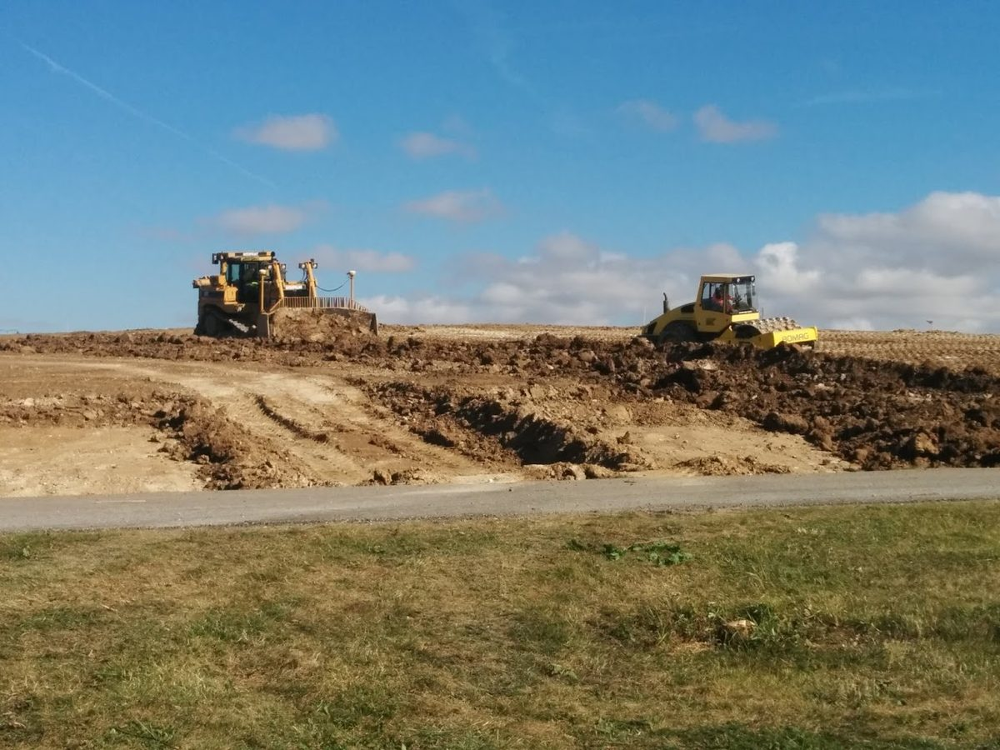
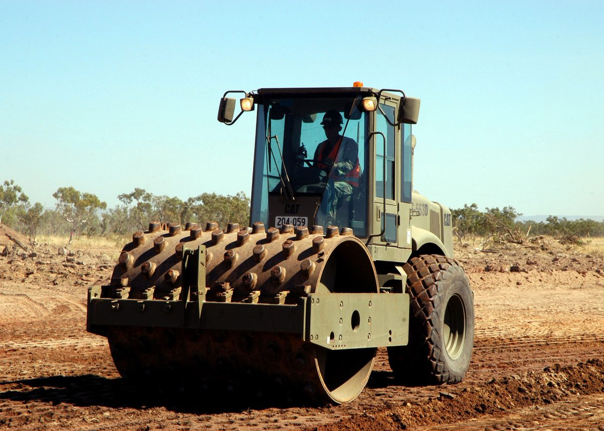
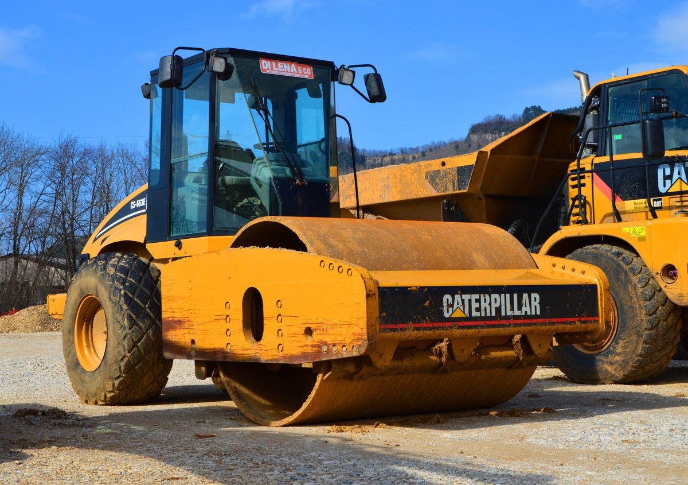
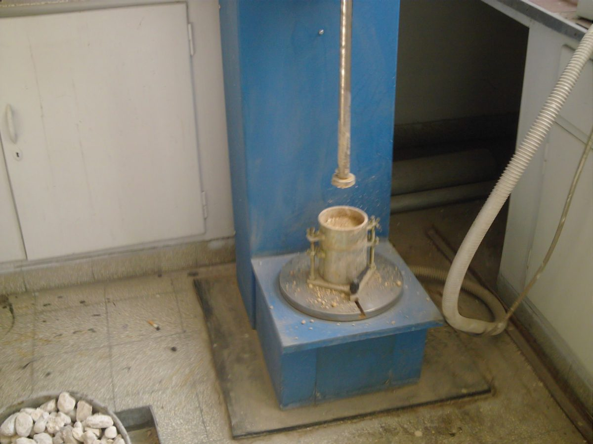
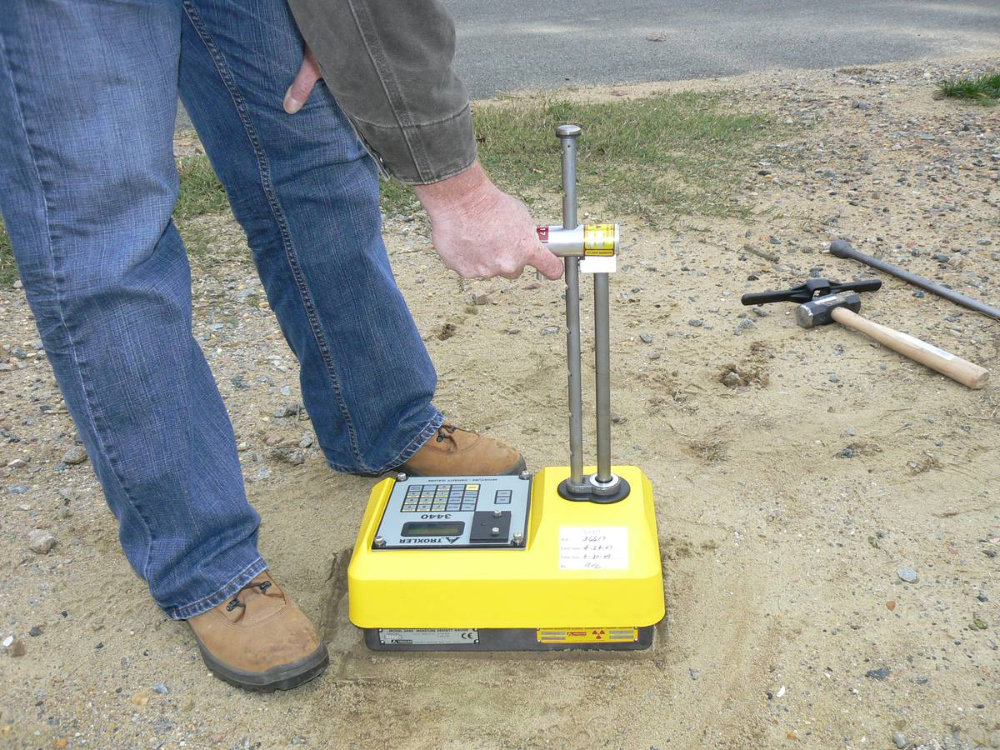
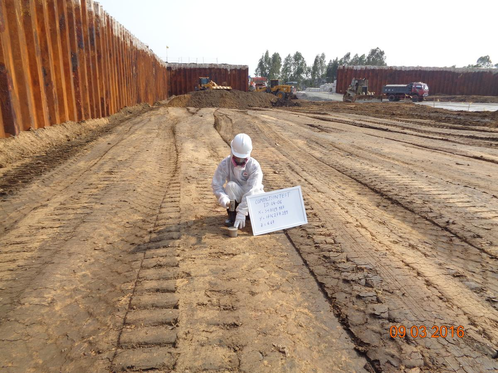

1Why we compact — and how much is enough

Fill that is simply dumped and spread is a loose pile of particles and air. Load it and it settles; wet it and it softens. Compaction is the mechanical work of driving the air out so the particles lock together at a higher dry density — and dry density is the number that everything else follows. Denser fill is stiffer and stronger, settles less, lets less water through, and holds up the slab, pavement, or footing that will sit on it for decades.
Compaction is densification of soil by mechanical energy that expels air from the voids, at essentially constant water content. Consolidation is different: that is water squeezed out of a saturated soil by a sustained load, slowly, over months or years.
Compaction happens in lifts, thin layers placed loose and rolled before the next one goes down. The roller has to match the soil. Padfoot (sheepsfoot) rollers knead cohesive soils with their protruding feet and "walk out" of a lift as it densifies; smooth-drum vibratory rollers shake granular soils into a tighter packing; plate compactors and rammers do the same job in trenches and against walls. As typical practice, cohesive soils go down in loose lifts of about 6 to 8 in. and granular soils in lifts up to about 12 in., because a roller only works to a certain depth and a lift thicker than that stays loose at the bottom, no matter how many passes it gets.


So the question on every earthwork job is the same: is this lift dense enough? Answering it takes two measurements. In the laboratory, the Proctor test tells you the densest this soil can get with a standard amount of effort, and at what water content. In the field, a density test tells you what the roller actually achieved. The ratio of the two is the number the specification is written around.
The laboratory gives you the target; the field test gives you the score. Both are reported as dry unit weight, because water in the voids adds weight without adding strength.
2The Proctor test (ASTM D698 and D1557)
In 1933 R. R. Proctor, working on earth dams for the City of Los Angeles, showed that for a fixed compactive effort the dry density of a soil rises with water content up to a peak and then falls. The test that carries his name reproduces that experiment in a mold: you compact the same soil at several water contents with the same energy and find the peak. ASTM D698 does it with standard effort; ASTM D1557 does it with modified effort, about four and a half times more, introduced when heavier aircraft and heavier rollers demanded denser fills.
| ASTM D698 (standard) | ASTM D1557 (modified) | |
|---|---|---|
| Compactive effort | 12,400 ft·lbf/ft³ (600 kN·m/m³) | 56,000 ft·lbf/ft³ (2,700 kN·m/m³) |
| Rammer | 5.5 lbf (24.5 N) | 10 lbf (44.5 N) |
| Drop | 12 in. (305 mm) | 18 in. (457 mm) |
| Layers | 3 | 5 |
| Blows per layer, 4 in. mold | 25 | 25 |
| Blows per layer, 6 in. mold | 56 | 56 |
Methods A, B and C differ only in the sieve the soil is prepared through and the mold: A uses the 4 in. mold with soil passing the No. 4 (4.75 mm) sieve when 25 % or less is retained on it; B uses the 4 in. mold with soil passing the 3/8 in. (9.5 mm) sieve; C uses the 6 in. mold with soil passing the 3/4 in. (19.0 mm) sieve when 30 % or less is retained on it.

The procedure in five moves
- Prepare four or five specimens. Take enough soil for one mold per point, add water so the points sit about 2 % apart and bracket the expected optimum — at least two dry of it and two wet of it — and let each batch cure so the water spreads evenly through the soil.
- Compact in layers. Weigh the empty mold. Place the soil in three layers (five for modified) and give each the prescribed blows with the rammer, spread evenly over the surface, with the collar on so the last layer finishes above the mold.
- Strike off and weigh. Remove the collar, trim the soil flush with the top of the mold with a straightedge, and weigh mold plus soil. Wet unit weight is the soil mass divided by the mold volume.
- Take the water content. Extrude the specimen, take a representative sample from its full height, and dry it to constant mass in a 110 ± 5 °C oven (ASTM D2216). Water content is the mass of water divided by the mass of dry soil.
- Plot and read. Convert each wet unit weight to dry, plot dry unit weight against water content, draw a smooth curve through the points, and read the peak: the maximum dry unit weight and the optimum water content.
The mold only holds what passes the method's sieve. If the fill in the field carries more oversize rock than the laboratory specimen did, the laboratory maximum is too low for that material. ASTM D4718 corrects the maximum dry unit weight and optimum water content for the oversize fraction before you compare them with a field test.
3Reading the compaction curve
Each point on the curve is a dry unit weight. You never weigh dry soil in the mold; you weigh it wet and take the water back out arithmetically:
where w is the water content as a decimal. A mold that holds 122.9 pcf of wet soil at 12 % water holds 122.9 / 1.12 = 109.7 pcf of dry soil.
Dry of optimum the soil is stiff and the rammer cannot rearrange the particles; the water is a lubricant, and adding some lets the same energy pack them closer. Past the optimum the voids are nearly full of water, and water cannot be compacted, so extra water only takes up space that solids could have occupied. The curve therefore bends over, and it can never cross the zero-air-voids line:
with Gs the specific gravity of the soil solids (about 2.65 to 2.75 for most soils) and γw = 62.4 pcf. Points plotting on the wrong side of that line are arithmetic errors, not soil. Two more things the curve tells you. First, more compactive effort raises the maximum and lowers the optimum, which is why a fill specified against D1557 is a stiffer, drier fill than one specified against D698. Second, a clay compacted wet of optimum is less permeable but weaker than the same clay compacted dry of optimum at the same density; the spec's moisture window is there for a reason.
A compaction curve belongs to one soil and one effort. Change the borrow pit, the sieve fraction, or the standard, and you need a new curve.
4Measuring density in the field
The field test has one job: find the dry unit weight of the lift as compacted. Two methods do it — one by digging, one by radiation — and both end with the same pair of numbers, wet density and water content.
The sand cone (ASTM D1556)
- Seat the plate. Level a spot on the lift, set the base plate, and dig a hole through its opening — roughly the width of a hand and about the depth of the lift — keeping every crumb of soil in a sealed container.
- Weigh the soil. Weigh the wet soil from the hole and take a sample for water content.
- Fill the hole with sand. Weigh the jar, invert it on the plate, open the valve, and let sand run until it stops; close the valve and weigh the jar again.
- Find the hole volume. Sand used, minus the calibrated mass that fills the cone and plate, divided by the sand's bulk density, is the volume of the hole.
- Compute. Wet soil mass over hole volume is the wet unit weight; divide by (1 + w) for the dry unit weight.
The sand is the instrument. D1556 wants it clean, dry, free-flowing and uniformly graded — a coefficient of uniformity below 2, nothing coarser than 2.0 mm, and less than 3 % passing the No. 60 (250 µm) sieve — and it wants its bulk density re-calibrated at least every 14 days, after any large change in humidity, and for every new batch. A damp jar of sand bulks up, reads a smaller hole, and turns a passing lift into a failing one. The sand cone is slow, but it is a direct physical measurement with nothing to license, which is why it is the referee method when a nuclear gauge result is disputed.
The nuclear gauge (ASTM D6938)

The gauge holds two sealed sources. Gamma photons from cesium-137 are scattered and absorbed in proportion to the density of what they pass through, so the count that reaches the detectors gives the wet density. Fast neutrons from an americium-241:beryllium source are slowed by hydrogen, and a helium-3 detector counts the slow ones, so that count gives the water content — with the caveat that any hydrogen counts, including chemically bound water in gypsum or the hydrogen in organics, which is why unusual soils get an oven check. The gauge then reports wet density, water content, dry density, and, if you have entered the laboratory maximum, percent compaction.
- Standardize. Take a standard count on the reference block at the start of each day of use, and after rough handling, so the gauge tracks source decay and drift.
- Prepare the surface. Smooth and level a spot, fill surface voids with native fines, set the guide plate, drive the drill rod to the test depth, and remove it.
- Seat and read. Set the gauge over the hole, lower the source rod to the depth notch, pull the gauge gently so the rod bears against the hole wall toward the detector, and take a one-minute count (four minutes when the result matters).
- Record. Note wet density, water content, dry density and percent compaction, the test depth, and the location on the lift.
The sources are radioactive. The gauge is licensed by the Nuclear Regulatory Commission or an Agreement State, its operator is trained and wears a dosimeter, it travels in a locked shielded case, and the source rod goes back to the shielded position between readings. Keep bystanders back. None of this is optional, and none of it makes the gauge dangerous when the rules are followed.

Whichever method you use, the water content is worth an independent check now and then: an oven sample per ASTM D2216 (110 ± 5 °C to constant mass, usually overnight) or the faster microwave method of ASTM D4643 when the crew cannot wait.
5Percent compaction and the spec
The specification does not ask for a density in pounds. It asks for a fraction of what the soil can do, so that the same clause works for a silty clay and a crushed stone:
Typical project language calls for 95 % of the ASTM D698 maximum dry unit weight under slabs, pavements and structural fill, and 90 % for landscaped or non-structural fill; some specifications are written against D1557 instead, usually with 90 to 95 %, which is a much stiffer requirement. Most also fix a water content window — commonly within 2 % of optimum either way — because a lift that hits the density wet of optimum will not behave like one that hit it dry. Read the clause carefully: which standard, what percentage, and what moisture window are three separate numbers, and "95 %" alone is not a specification.
| Result | What it usually means | Fix, then retest |
|---|---|---|
| Low density, dry of the window | Not enough water to lubricate the particles | Add water, mix it in, re-roll |
| Low density, wet of the window | Voids full of water; rolling only pumps it | Scarify and let it dry back, then re-roll |
| Low density, moisture in the window | Too few passes, or the lift is thicker than the roller reaches | More passes; thinner lifts; heavier roller |
| Density fine, moisture outside the window | Right number, wrong soil structure | Rework to the window; the spec calls for both |
Testing frequency is set by the spec too — typically a test per lift for every so many square feet of area or cubic yards placed, with at least one test per lift — and a test that fails means the lift is reworked and retested, not averaged with its neighbours. Keep the laboratory curve, the field readings, the depth and location of each test, and the moisture check together; the day someone asks why a slab cracked, that record is the answer.
Percent compaction is a ratio of two dry unit weights measured on the same soil against the same standard. A different borrow source, a different sieve fraction, or a switch from D698 to D1557 changes the denominator — and the number.
6Try it: from the Proctor points to a pass or fail
The numbers below are example numbers, not a real test. Change any of them and the curve, the peak, and the verdict update. Wet unit weights are what you weigh in the mold; the calculator takes the water back out, fits a parabola through the dry unit weights, and compares the field test with the peak.
- Optimum water content
- —
- Maximum dry unit weight
- —
- Percent compaction
- —
- Verdict
- —
Units: pcf throughout (1 pcf = 0.157 kN/m³). The curve is a least-squares parabola through the dry unit weights, which is what a hand-drawn smooth curve approximates; with points far from the peak it will warn you.
7Common mistakes
- Comparing against the wrong curve. A field test judged against a D1557 maximum when the spec says D698 fails a good lift; the reverse passes a bad one. Write the standard on the report.
- Judging by wet density. A wet lift weighs more. Only the dry unit weight tells you how much soil is in the hole.
- Forgetting the oversize. Rock that never fit in the mold makes the field material denser than the laboratory curve predicts. Apply the D4718 correction, or the fill "passes" at 102 % and nobody trusts the numbers.
- Skipping the standard count, or testing on a rough surface. Both shift the gauge reading. Voids under the gauge read low; a missed standard count hides drift.
- Damp sand in the cone. Sand that has picked up humidity bulks, the hole volume reads small, and the density reads high. Recalibrate.
- Lifts thicker than the roller reaches. The top passes; the bottom stays loose, and the settlement shows up under the slab a year later. Test at the depth of the lift, not its skin.
- Passing on density alone. A lift at 96 % but four points wet of optimum is outside the spec. Both numbers count.
8Key takeaways
- Compaction drives out air, and the number that matters is dry unit weight: γd = γwet / (1 + w).
- The Proctor test (D698 standard, D1557 modified) gives one soil's maximum dry unit weight and optimum water content for one effort — 12,400 or 56,000 ft·lbf/ft³.
- The field test — sand cone or nuclear gauge — gives the dry unit weight of the lift; percent compaction is the ratio, typically specified at 95 % with a moisture window.
- A failed test is reworked and retested; the fix depends on whether the lift was dry, wet, or simply under-rolled.
Sources: ASTM D698 and D1557 (laboratory compaction, standard and modified effort); ASTM D1556/D1556M (sand cone); ASTM D6938 (nuclear methods, shallow depth); ASTM D2216 and D4643 (water content); ASTM D4718 (oversize correction). Specification values are typical project language, not ASTM requirements.
Photo credits: Landscape shaping at Brunnshög by Nixdorf, CC BY 4.0; Proctor device 1 by Zaher.Kadour, CC BY-SA 3.0; Moisture density gauge by the U.S. Nuclear Regulatory Commission, CC BY 2.0; Seabees compactor roller, U.S. Air Force photo, public domain; Caterpillar CS 663E vibratory soil compactor by Spielvogel, CC0; Testing compaction of soil sediment, USAID Vietnam / CDM Smith, public domain; all via Wikimedia Commons. The photos were resized and recompressed for the web.
{kind=link}
{kind=link}
.jpg){kind=link}
{kind=link}
{kind=link}
.jpg){kind=link}